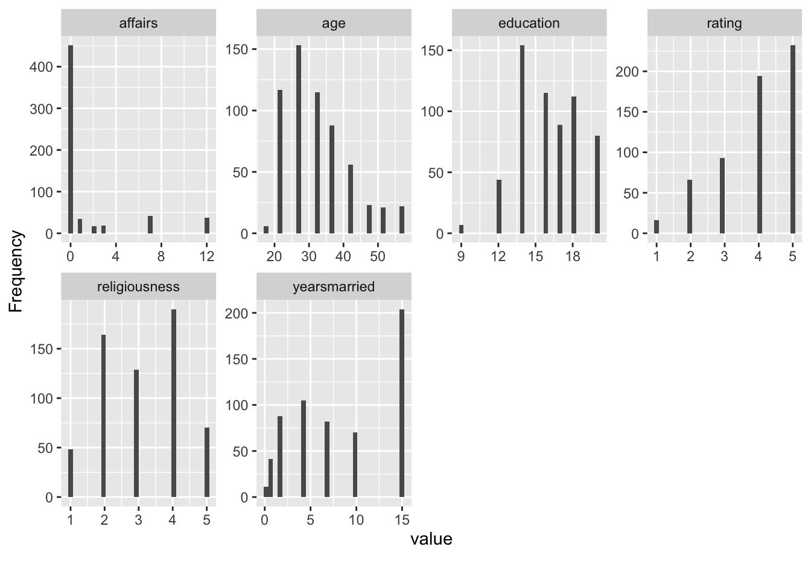
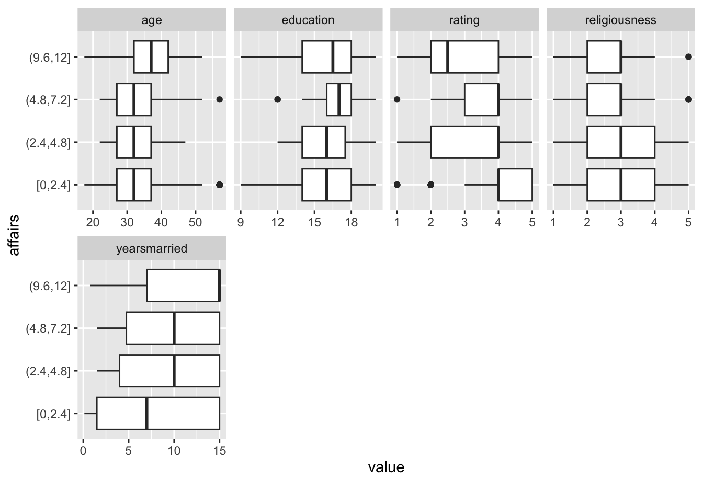
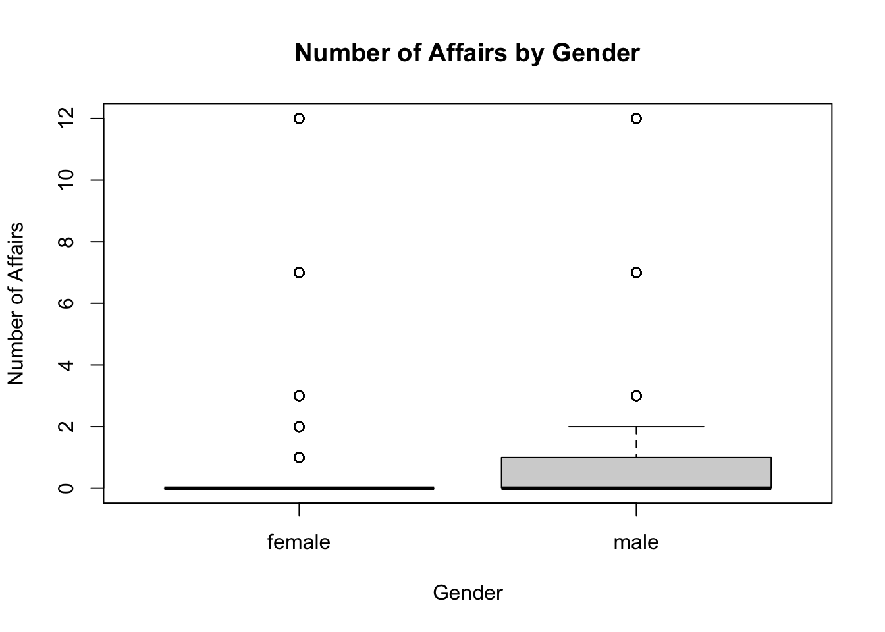
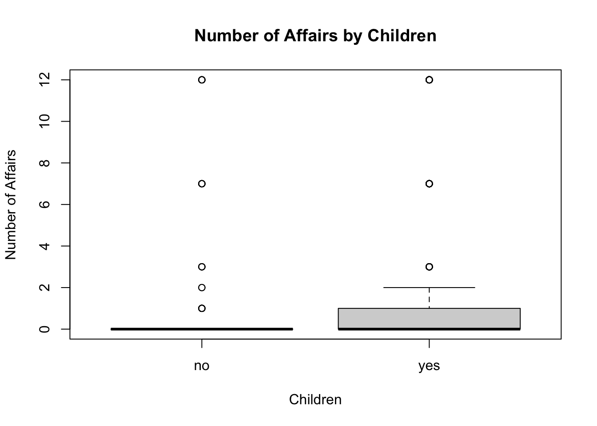
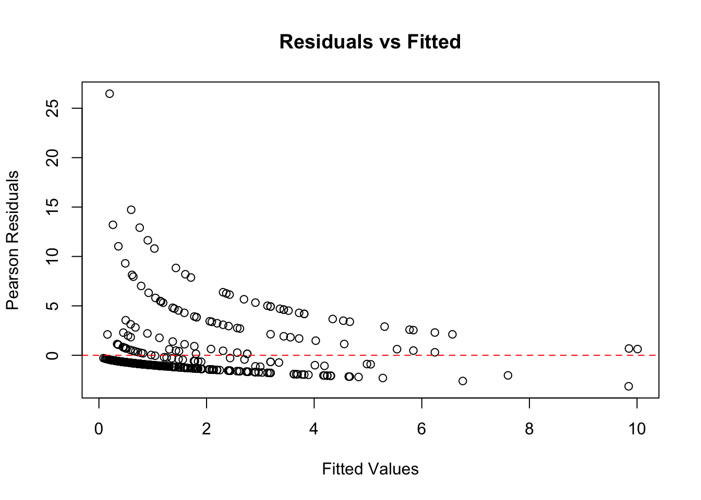
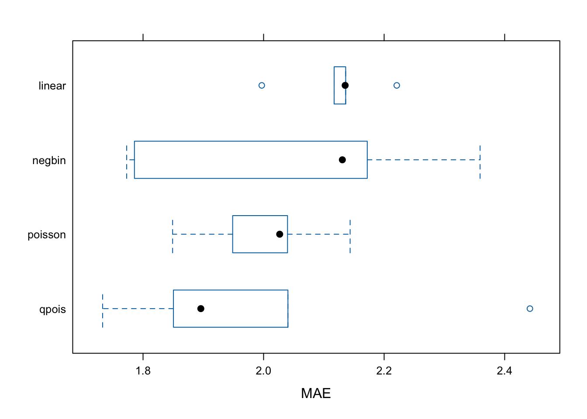

── Attaching core tidyverse packages ──────────────────────── tidyverse 2.0.0 ──
✔ dplyr 1.1.4 ✔ readr 2.1.5
✔ forcats 1.0.0 ✔ stringr 1.5.1
✔ ggplot2 4.0.0 ✔ tibble 3.3.0
✔ lubridate 1.9.4 ✔ tidyr 1.3.1
✔ purrr 1.1.0
── Conflicts ────────────────────────────────────────── tidyverse_conflicts() ──
✖ dplyr::filter() masks stats::filter()
✖ dplyr::lag() masks stats::lag()
ℹ Use the conflicted package (<http://conflicted.r-lib.org/>) to force all conflicts to become errors
library(data.table)
Attaching package: 'data.table'
The following objects are masked from 'package:lubridate':
hour, isoweek, mday, minute, month, quarter, second, wday, week,
yday, year
The following objects are masked from 'package:dplyr':
between, first, last
The following object is masked from 'package:purrr':
transpose
library(tidyverse)library(caret)
Loading required package: lattice
Attaching package: 'caret'
The following object is masked from 'package:purrr':
lift
set.seed(1234)
affairs: is the number of extramarital affairs in the past year and is our response variable
gender
age
yearsmarried
children (yes or no)
religiousness (1 - anti, 5 - very)
education
rating self rating of the marriage 1 (very unhappy) to 5 (very happy)
and some others
summary(Affairs)
affairs gender age yearsmarried children
Min. : 0.000 female:315 Min. :17.50 Min. : 0.125 no :171
1st Qu.: 0.000 male :286 1st Qu.:27.00 1st Qu.: 4.000 yes:430
Median : 0.000 Median :32.00 Median : 7.000
Mean : 1.456 Mean :32.49 Mean : 8.178
3rd Qu.: 0.000 3rd Qu.:37.00 3rd Qu.:15.000
Max. :12.000 Max. :57.00 Max. :15.000
religiousness education occupation rating
Min. :1.000 Min. : 9.00 Min. :1.000 Min. :1.000
1st Qu.:2.000 1st Qu.:14.00 1st Qu.:3.000 1st Qu.:3.000
Median :3.000 Median :16.00 Median :5.000 Median :4.000
Mean :3.116 Mean :16.17 Mean :4.195 Mean :3.932
3rd Qu.:4.000 3rd Qu.:18.00 3rd Qu.:6.000 3rd Qu.:5.000
Max. :5.000 Max. :20.00 Max. :7.000 Max. :5.000
Have a close look at the distribution of our target variable: 75% of our observations are 0.
Check the target variable and its relation to other vars
plot_histogram(Affairs)

plot_boxplot(Affairs, by ="affairs")

There might be a relationship between rating and having an affair because the box plots scale to the right. Maybe years married and affairs since they tend to have a small relationship.
#genderboxplot(affairs ~ gender, data = Affairs, main ="Number of Affairs by Gender", ylab ="Number of Affairs", xlab ="Gender")

wilcox.test(affairs ~ gender, data = Affairs)
Wilcoxon rank sum test with continuity correction
data: affairs by gender
W = 43314, p-value = 0.2839
alternative hypothesis: true location shift is not equal to 0
We can determine that gender is not statistically significant, but with non-normal distribution these tests are not as reliable.
# childrenboxplot(affairs ~ children, data = Affairs, main ="Number of Affairs by Children", ylab ="Number of Affairs", xlab ="Children")

wilcox.test(affairs ~ children, data = Affairs)
Wilcoxon rank sum test with continuity correction
data: affairs by children
W = 32028, p-value = 0.001165
alternative hypothesis: true location shift is not equal to 0
With children, we can see it is statistically significant.
Let’s train a linear and a poisson model to start with
formula <- affairs ~ age + yearsmarried + religiousness + rating + rating*religiousness + children
We are going to train a linear model to see how it compares to a Poisson regression.
# Train a LM modellm_model <-lm(formula, data = train.data)summary(lm_model)
Call:
lm(formula = formula, data = train.data)
Residuals:
Min 1Q Median 3Q Max
-5.5738 -1.7669 -0.7218 0.3122 12.6874
Coefficients:
Estimate Std. Error t value Pr(>|t|)
(Intercept) 6.80420 1.66003 4.099 4.88e-05 ***
age -0.04532 0.02497 -1.815 0.070206 .
yearsmarried 0.18070 0.04626 3.906 0.000107 ***
religiousness -0.57707 0.47320 -1.220 0.223259
rating -0.89234 0.37685 -2.368 0.018292 *
childrenyes -0.25462 0.38269 -0.665 0.506159
religiousness:rating 0.01850 0.11430 0.162 0.871470
---
Signif. codes: 0 '***' 0.001 '**' 0.01 '*' 0.05 '.' 0.1 ' ' 1
Residual standard error: 3.145 on 474 degrees of freedom
Multiple R-squared: 0.1495, Adjusted R-squared: 0.1388
F-statistic: 13.89 on 6 and 474 DF, p-value: 1.418e-14
# Train a poisson modelpoisson_model <-glm(formula, family = poisson, data = train.data)poisson_model
Call: glm(formula = formula, family = poisson, data = train.data)
Coefficients:
(Intercept) age yearsmarried
2.07521 -0.02919 0.11445
religiousness rating childrenyes
-0.03281 -0.18270 0.01613
religiousness:rating
-0.09648
Degrees of Freedom: 480 Total (i.e. Null); 474 Residual
Null Deviance: 2406
Residual Deviance: 1885 AIC: 2312
From the linear model we see that rating and years married are the important variables.
This is the results of the poisson model. The residual deviance is lower than the null deviance, so it is better than a random model. However, it is much higher than the degrees of freedom, which means it does not fit the model.
Compare models using Achaiche information criteria (AIC)
aic_results <-AIC(lm_model, poisson_model)# Show resultslist(AIC = aic_results)
Most people have zero numbers of affairs. But we are predicting a lot of values that should be zero. The poisson regression expects there to be more values than zeros, but in our data this is not the case.
# Calculate Pearson residualsfitted_values <-fitted(poisson_model)pearson_residuals <-residuals(poisson_model, type ="pearson")# Plot residuals vs fitted valuesplot(fitted_values, pearson_residuals,xlab ="Fitted Values", ylab ="Pearson Residuals",main ="Residuals vs Fitted")abline(h =0, col ="red", lty =2)

We want to have a cloud of dots around the line, rather than patterns.
If residuals show a pattern, additional predictors or transformations may be needed.(Random scatter around zero suggests a well-fitting model)
One possible remedy is to incorporate interaction terms, capturing complex relationships between predictors.
This may improve model fit, but can lead to overfitting.
Quite high dispersion factor! The variance is very high in the model, and we have a problem with overdispersion. It should be lower than 1.5.
# Overdispersion testlibrary(AER)
Loading required package: car
Loading required package: carData
Attaching package: 'car'
The following object is masked from 'package:dplyr':
recode
The following object is masked from 'package:purrr':
some
Loading required package: lmtest
Loading required package: zoo
Attaching package: 'zoo'
The following objects are masked from 'package:data.table':
yearmon, yearqtr
The following objects are masked from 'package:base':
as.Date, as.Date.numeric
Loading required package: sandwich
Loading required package: survival
Attaching package: 'survival'
The following object is masked from 'package:caret':
cluster
dispersiontest(poisson_model)
Overdispersion test
data: poisson_model
z = 3.9786, p-value = 3.466e-05
alternative hypothesis: true dispersion is greater than 1
sample estimates:
dispersion
7.143391
Ho: There is no overdispersion
Seems there is overdispersion (almost 0 p-value)
The p-value is very low, so we reject the null hypothesis.
Quasipoisson and negative binomial alternatives —-
Quasi-poisson model
# Train a poisson modelqpoisson_model <-glm(formula, family = quasipoisson, data = train.data)qpoisson_model
Call: glm(formula = formula, family = quasipoisson, data = train.data)
Coefficients:
(Intercept) age yearsmarried
2.07521 -0.02919 0.11445
religiousness rating childrenyes
-0.03281 -0.18270 0.01613
religiousness:rating
-0.09648
Degrees of Freedom: 480 Total (i.e. Null); 474 Residual
Null Deviance: 2406
Residual Deviance: 1885 AIC: NA
# Compute predictions and MAE qpois_preds <-predict(qpoisson_model, type ="response", newdata = test.data)qpois_MAE <-mean(abs(test.data$affairs - qpois_preds))qpois_MAE
[1] 2.026248
Same coefficients as Poisson, but corrected standard errors. AIC, BIC cannot be used with Quasi-Poisson regression.
Picking a new type of model. Quasi-poisson has a correction for the overdispersion.
The residual deviance has decreased a lot. The fit of the model is getting better, but the predictions will probably not get better because of the nature of the target variable.
Negative - binomial model
# Negative binomial model library(MASS)
Attaching package: 'MASS'
The following object is masked from 'package:dplyr':
select
negbin_model<-glm.nb(formula, data = train.data)
Warning: glm.fit: algorithm did not converge
negbin_model
Call: glm.nb(formula = formula, data = train.data, init.theta = 0.1519830308,
link = log)
Coefficients:
(Intercept) age yearsmarried
1.600001 0.006091 0.073648
religiousness rating childrenyes
-0.216771 -0.274987 0.147886
religiousness:rating
-0.054072
Degrees of Freedom: 480 Total (i.e. Null); 474 Residual
Null Deviance: 327.2
Residual Deviance: 281.5 AIC: 1218
# Compute predictions and MAE nb_preds <-predict(negbin_model, type ="response", newdata = test.data)nb_MAE <-mean(abs(test.data$affairs - nb_preds))nb_MAE
[1] 2.06511
The residual deviance here is lowest, meaning the negative binomial is the best fit for this model.
Zero-inflated models —–
ZI Poisson
library(pscl)
Classes and Methods for R originally developed in the
Political Science Computational Laboratory
Department of Political Science
Stanford University (2002-2015),
by and under the direction of Simon Jackman.
hurdle and zeroinfl functions by Achim Zeileis.
zip <-zeroinfl(formula, data = train.data, dist="poisson")zip_preds <-predict(zip, type ="response", newdata = test.data)zip_mae <-mean(abs(test.data$affairs - zip_preds))zip_mae
[1] 1.999784
ZI Negative Binomial
zi_nb <-zeroinfl(formula, data = train.data, dist="negbin")zi_nb_preds<-predict(zi_nb, type ="response", newdata = test.data)zinb_mae <-mean(abs(test.data$affairs - zi_nb_preds))zinb_mae
[1] 2.007327
Compare models —-
In terms of MAE - we dont see much improvement in prediction accuracy
We can see there are no differences in the predictions. This is a very rare event that although the model is getting better, the predictions are staying the same.
Our target variable is what it is.
In terms of AIC - our models have been improving a lot!
list(LinearModel =AIC(lm_model),PoissonModel =AIC(poisson_model),# QuasiPoisson = AIC(), AIC is not valid hereNegBin =AIC(negbin_model),ZIP =AIC(zip),ZI_NB =AIC(zi_nb))
Better statistical fit (AIC) does not necessarily mean better prediction accuracy. Zero-inflated models describe the data-generating process better, especially the zeros, but they do not magically predict rare counts more accurately :(
Rare event prediction is inherently hard!!
Using caret for cross validation and model comparison
Caret does not support zero inflated models, so we will go ahead with the rest.
library(MASS)library(caret)library(e1071)
Attaching package: 'e1071'
The following object is masked from 'package:ggplot2':
element
set.seed(123)#CV setup: cv with 10 foldstrain_control <-trainControl(method ="cv", number =5)#linearlm_fit <-train(formula, data = train.data, method ="lm", trControl = train_control)#poissonpoisson_fit <-train(formula, data = train.data, method ="glm", family =poisson(),trControl = train_control)#quasi poisson model (just change the family)qpois_fit <-train(formula, data = train.data, method ="glm", family=quasipoisson(),trControl = train_control)#negative binomial neg_bin_fit <-train(formula, data = train.data, method ="glm.nb",trControl = train_control)
Warning: model fit failed for Fold1: link=sqrt Error : no valid set of coefficients has been found: please supply starting values
Warning in log(y/mu): NaNs produced
Warning: model fit failed for Fold1: link=identity Error : no valid set of coefficients has been found: please supply starting values
Warning: glm.fit: algorithm did not converge
Warning: glm.fit: algorithm did not converge
Warning: glm.fit: algorithm did not converge
Warning: glm.fit: algorithm did not converge
Warning: glm.fit: algorithm did not converge
Warning: glm.fit: algorithm did not converge
Warning: glm.fit: algorithm did not converge
Warning: glm.fit: algorithm did not converge
Warning: glm.fit: algorithm did not converge
Warning: glm.fit: algorithm did not converge
Warning: glm.fit: algorithm did not converge
Warning: glm.fit: algorithm did not converge
Warning: glm.fit: algorithm did not converge
Warning: glm.fit: algorithm did not converge
Warning: glm.fit: algorithm did not converge
Warning: glm.fit: algorithm did not converge
Warning: model fit failed for Fold2: link=sqrt Error : no valid set of coefficients has been found: please supply starting values
Warning in log(y/mu): NaNs produced
Warning: model fit failed for Fold2: link=identity Error : no valid set of coefficients has been found: please supply starting values
Warning: glm.fit: algorithm did not converge
Warning: glm.fit: algorithm did not converge
Warning: glm.fit: algorithm did not converge
Warning: glm.fit: algorithm did not converge
Warning: glm.fit: algorithm did not converge
Warning: glm.fit: algorithm did not converge
Warning: glm.fit: algorithm did not converge
Warning: glm.fit: algorithm did not converge
Warning: glm.fit: algorithm did not converge
Warning: glm.fit: algorithm did not converge
Warning: glm.fit: algorithm did not converge
Warning: glm.fit: algorithm did not converge
Warning: glm.fit: algorithm did not converge
Warning: glm.fit: algorithm did not converge
Warning: glm.fit: algorithm did not converge
Warning: glm.fit: algorithm did not converge
Warning: glm.fit: algorithm did not converge
Warning: glm.fit: algorithm did not converge
Warning: glm.fit: algorithm did not converge
Warning: glm.fit: algorithm did not converge
Warning: glm.fit: algorithm did not converge
Warning: glm.fit: algorithm did not converge
Warning: glm.fit: algorithm did not converge
Warning: glm.fit: algorithm did not converge
Warning: glm.fit: algorithm did not converge
Warning: model fit failed for Fold4: link=sqrt Error : no valid set of coefficients has been found: please supply starting values
Warning in log(y/mu): NaNs produced
Warning: model fit failed for Fold4: link=identity Error : no valid set of coefficients has been found: please supply starting values
Warning: model fit failed for Fold5: link=sqrt Error : no valid set of coefficients has been found: please supply starting values
Warning in log(y/mu): NaNs produced
Warning: model fit failed for Fold5: link=identity Error : no valid set of coefficients has been found: please supply starting values
Warning in nominalTrainWorkflow(x = x, y = y, wts = weights, info = trainInfo,
: There were missing values in resampled performance measures.
Warning in train.default(x, y, weights = w, ...): missing values found in
aggregated results
Warning: glm.fit: algorithm did not converge
Now we use resamples() to collect the results from our cv process into one object. It just collects results already computed inside each model and put it together.
Call:
summary.resamples(object = results)
Models: linear, poisson, qpois, negbin
Number of resamples: 5
MAE
Min. 1st Qu. Median Mean 3rd Qu. Max. NA's
linear 1.996978 2.117065 2.135356 2.121317 2.136210 2.220974 0
poisson 1.849062 1.948680 2.026721 2.001549 2.039720 2.143564 0
qpois 1.732922 1.850419 1.895866 1.992299 2.040402 2.441886 0
negbin 1.772856 1.785717 2.130697 2.044100 2.172000 2.359233 0
RMSE
Min. 1st Qu. Median Mean 3rd Qu. Max. NA's
linear 2.943531 3.029105 3.209198 3.160034 3.298577 3.319761 0
poisson 2.846679 2.962177 3.142000 3.125141 3.234463 3.440389 0
qpois 2.724314 2.828544 3.021440 3.118337 3.364125 3.653260 0
negbin 2.917178 2.976592 3.278189 3.178459 3.354460 3.365877 0
Rsquared
Min. 1st Qu. Median Mean 3rd Qu. Max. NA's
linear 0.09647708 0.11857184 0.1286516 0.1297205 0.1483853 0.1565169 0
poisson 0.03862890 0.09517932 0.1778141 0.1605496 0.2382465 0.2528790 0
qpois 0.02566312 0.16070811 0.1876788 0.1782505 0.2421827 0.2750198 0
negbin 0.07109991 0.08813365 0.1336355 0.1309814 0.1653791 0.1966591 0
bwplot(results, metric ="MAE")

From cv training, it seems that negbin provides the best MAE but differences are very small!
Now we can compute our predictions and metrics on the test set, and select our final model.
Regularization in GLMs
We’ve been talking about several different models for different types of problems.
Now that we know most models form the generalized linear models family, we can combine them with regularization methods to prevent overtiffing, handle multicollinearity, perform feature selection…
Let’s see how to apply Lasso regularization to Poisson and Logistic Regression
Remember Penalized Linear Model with caret
Caret supports a lot of different models from other packages (like glmnet) Because glmnet only supports: Gaussian / Binomial / Multinomial / Poisson distributions, other models cannot be included in this caret approach (like negbin)
We can customize the model fitting process by selecting:
Cross validation method un trainControl
Performance metrics (RMSE by default) in metric, we have to change them for classification
It includes an argument to preprocess data (scale)
EXAMPLE:
lambda <- 10^seq(-3, 2, length = 100)
lasso_lm <- train( target ~., # model formula data = train.data, method = “glmnet”, # training package trControl = trainControl(“cv”, number = 10), # cv settings tuneGrid = expand.grid(alpha = 1, lambda = lambda), # values for hyperparameters preProc = c(“scale”) # standardization (key in regularization methods) )
Penalized Logistic Regression —-
data("PimaIndiansDiabetes2", package ="mlbench")# remove rows with NA valuesdf <-na.omit(PimaIndiansDiabetes2)
logistic <-train( form, data = train.data, method ="glm", family ="binomial",trControl = ctrl,metric ="ROC", # we want to use the ROC function to select the best modelpreProc =c("scale") )
Warning: glm.fit: fitted probabilities numerically 0 or 1 occurred
Warning: glm.fit: fitted probabilities numerically 0 or 1 occurred
Warning: glm.fit: fitted probabilities numerically 0 or 1 occurred
Warning: glm.fit: fitted probabilities numerically 0 or 1 occurred
Warning: glm.fit: fitted probabilities numerically 0 or 1 occurred
logistic
Generalized Linear Model
314 samples
8 predictor
2 classes: 'neg', 'pos'
Pre-processing: scaled (38)
Resampling: Cross-Validated (5 fold)
Summary of sample sizes: 251, 251, 251, 251, 252
Resampling results:
ROC Sens Spec
0.812517 0.8428571 0.6047619
ROC, Sens, Spec are the metrics we get in the typical regression.
Why do we create a baseline model if we are going to do regularization? It is good to see how the regularization will change the model.
Lasso
logistic_lasso <-train( form, data = train.data, method ="glmnet", family ="binomial",trControl = ctrl,tuneGrid =expand.grid(alpha =1, lambda = lambda),metric ="ROC",preProc =c("scale") # preprocessing step to scale numeric variables ) logistic_lasso
We get the logistical lasso estimation. This is a summary of the things that are tried during the cross-validation. It is changing the lambda value to try various combinations.
# Get the best model's coefficientslasso_best_lambda <- logistic_lasso$bestTune$lambdalasso_coefficients <-coef(logistic_lasso$finalModel, s = lasso_best_lambda)lasso_coefficients
This gives us the best combination, which was 0.004. When we use this lambda, we get a distinct set of coefficients. Lasso removed a lot of variables.
Note: Remember that regularized coefficients are best interpreted in terms of prediction, and variable selection — not direct impact on the target on its original scale
If we want to interpret, we’d better compute the standard logistic model with selected variables. Here we would interpret coefficients normally in a logistic regression
In this case, Ridge achieves the best predictive performance on the test set, probably because predictors are correlated and most of them contain useful information for the target
Infidelity data, known as Fair’s Affairs. Cross-section data from a survey conducted by Psychology Today in 1969.
affairs: is the number of extramarital affairs in the past year and is our response variable
gender
age
yearsmarried
children (yes or no)
religiousness (1 - anti, 5 - very)
education
rating self rating of the marriage 1 (very unhappy) to 5 (very happy)
summary(Affairs)
affairs gender age yearsmarried children
Min. : 0.000 female:315 Min. :17.50 Min. : 0.125 no :171
1st Qu.: 0.000 male :286 1st Qu.:27.00 1st Qu.: 4.000 yes:430
Median : 0.000 Median :32.00 Median : 7.000
Mean : 1.456 Mean :32.49 Mean : 8.178
3rd Qu.: 0.000 3rd Qu.:37.00 3rd Qu.:15.000
Max. :12.000 Max. :57.00 Max. :15.000
religiousness education occupation rating
Min. :1.000 Min. : 9.00 Min. :1.000 Min. :1.000
1st Qu.:2.000 1st Qu.:14.00 1st Qu.:3.000 1st Qu.:3.000
Median :3.000 Median :16.00 Median :5.000 Median :4.000
Mean :3.116 Mean :16.17 Mean :4.195 Mean :3.932
3rd Qu.:4.000 3rd Qu.:18.00 3rd Qu.:6.000 3rd Qu.:5.000
Max. :5.000 Max. :20.00 Max. :7.000 Max. :5.000
Regularization protects against overfitting only when overfitting is a “danger”. In this case, even with the engineered features, predictors barely explain the count variability (most observations are just 0).
If the underlying data pattern is weak (as we saw in our previous example with this data), regularization often does not improve or even hurts predictive performance. LASSO and Ridge, by shrinking coefficients, are actually throwing away small but real effects — because they can’t distinguish them from noise in such a weak-signal setting.